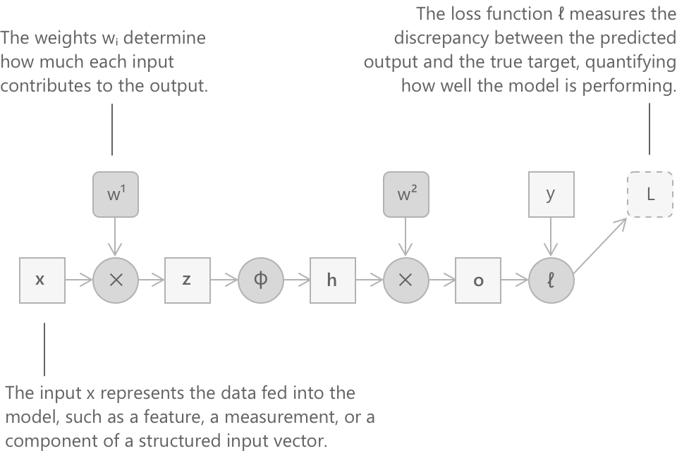
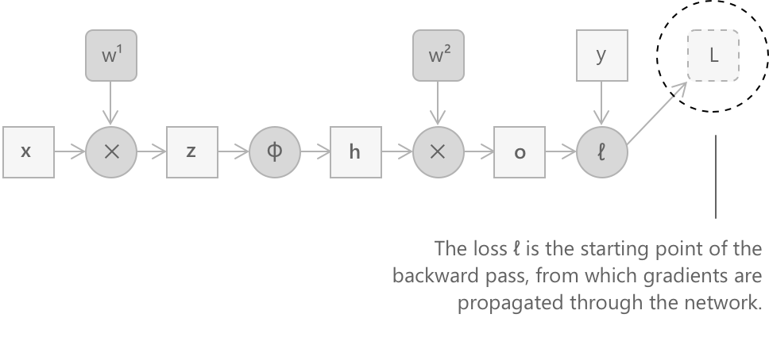
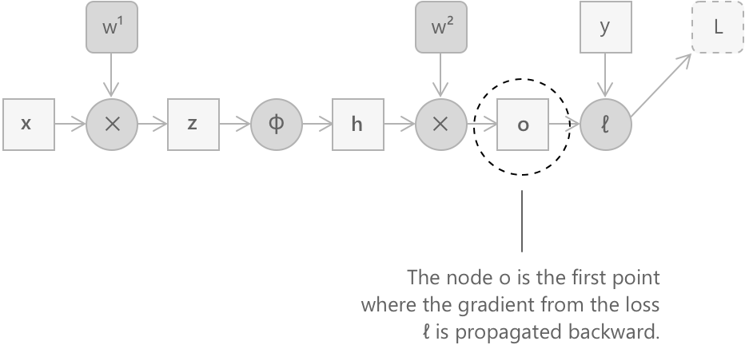
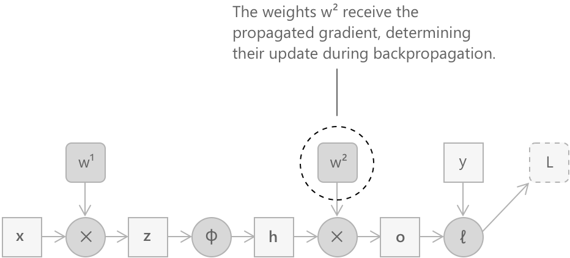
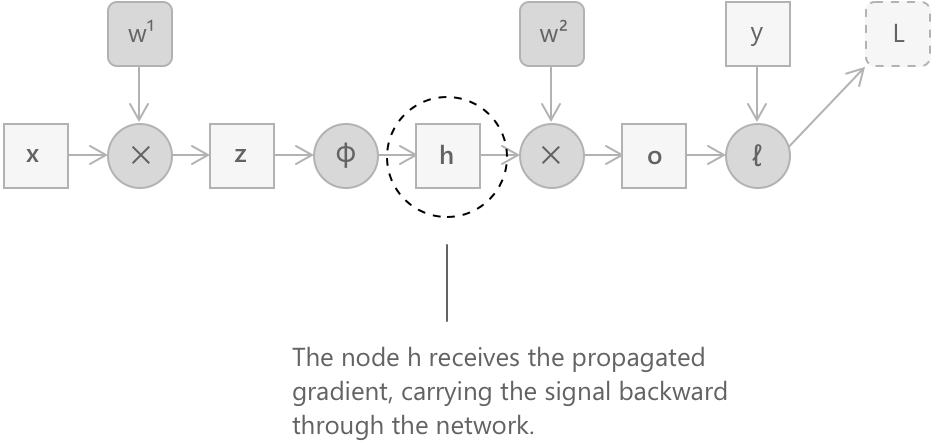
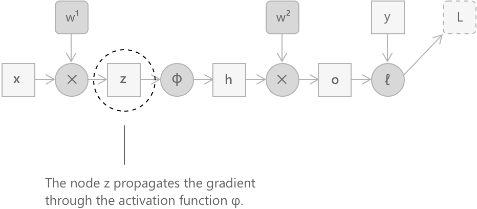
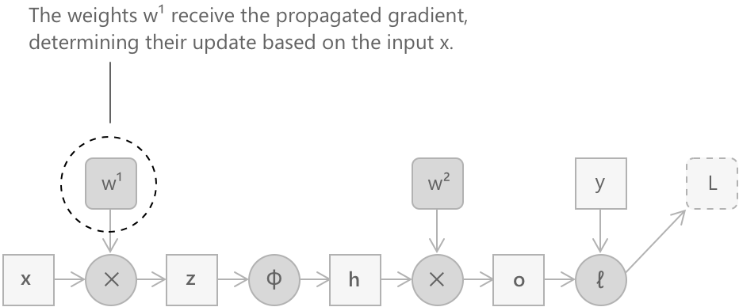

Алгоритм зворотного поширення
Що таке зворотне поширення помилки
Навчання нейронної мережі означає пошук значень параметрів, зазвичай матриць ваг, які мінімізують функцію втрат відносно навчальних даних. Фундаментальна проблема полягає в тому, що навіть помірно глибока мережа може містити мільйони параметрів, і обчислення градієнта втрат відносно кожного з них наївним способом вимагало б кількості операцій, пропорційної квадрату розміру мережі.
Зворотне поширення помилки розв'язує цю проблему, використовуючи композиційну структуру мережі та правило ланцюга диференціального числення. Таким чином стає можливим обчислити всі градієнти за час, пропорційний часу, необхідному для одного прямого проходу через мережу.
Інтуїтивно, зворотне поширення помилки відповідає на питання: на скільки слід скоригувати кожну вагу, щоб зменшити помилку, створену мережею? Відповідь міститься в градієнті втрат відносно кожного параметра. Алгоритм проходить через дві окремі фази.
-
У першій, що називається прямим проходом, вхідні дані поширюються шар за шаром до виходу, і проміжні значення кожного обчислення зберігаються.
-
У другій, зворотному проході, починають з помилки, здійсненої на виході, і поширюють її назад через мережу, ітеративно обчислюючи градієнти відносно кожного шару за допомогою правила ланцюга.
Цей механізм лежить в основі навчання практично всіх сучасних моделей глибокого навчання: від згорткових мереж для комп'ютерного зору до трансформерів, що використовуються в обробці природної мови.
Алгоритм зворотного поширення помилки був формалізований у 1986 році Девідом Е. Румельхартом, Джеффрі Е. Хінтоном та Рональдом Дж. Вільямсом у їхній основоположній роботі Learning representations by back-propagating errors (1986). Їхня робота показує, що навчання нейронної мережі може бути зведене до систематичного застосування правила ланцюга, що дозволяє обчислювати градієнти функції втрат відносно кожного параметра через локальні оновлення похідних.
Правило ланцюга як теоретична основа
Обчислення градієнтів у нейронній мережі повністю ґрунтується на правилі ланцюга. Якщо змінна \(Z\) залежить від \(Y\), а \(Y\) залежить від \(X\), то похідна \(Z\) відносно \(X\) отримується наступним чином:
\[ \frac{\partial Z}{\partial X} = \frac{\partial Z}{\partial Y} \cdot \frac{\partial Y}{\partial X} \]
Ця тотожність є механізмом, який дозволяє пов'язати градієнт втрат на виході мережі з градієнтом відносно будь-якого внутрішнього параметра, незалежно від того, наскільки далеко він знаходиться від виходу. Кожен шар мережі вносить локальний множник у загальний добуток, і зворотне поширення помилки використовує цю структуру так, щоб жодна величина ніколи не обчислювалася двічі.
Для повноти викладу корисно виразити правило ланцюга в його якобіанській формі. Якщо \( y = g(x) \) та \( z = f(y) \), то виконується:
\[ \nabla_x z = J_g(x)^\top \nabla_y z \]
Тут \( J_g(x) \) позначає матрицю Якобіана функції \( g \) у точці \( x \), тобто матрицю всіх часткових похідних компонентів \( y \) відносно компонентів \( x \). Таке формулювання чітко показує, як градієнти поширюються назад через векторні перетворення. Для спрощення цей рівень загальності не розглядається явно в прикладі, що обговорюється тут.
Обчислювальний граф
Щоб зробити міркування точними, зручно описати обчислення, що виконуються нейронною мережею, за допомогою спрямованого обчислювального графа. У цьому графі квадратні вузли представляють змінні (параметри, активації, входи, виходи), тоді як круглі вузли представляють операції (множення матриць, застосування нелінійності, обчислення втрат). Спрямовані ребра вказують на залежності між змінними та операціями.

Для спрощення в прикладі, наведеному нижче, вплив членів зміщення вздовж ланцюга зворотного поширення помилки явно не розглядається, оскільки їхній внесок підпорядковується аналогічним правилам диференціювання.
Наприклад, розглянемо двошарову повністю зв'язану мережу з функцією активації \(\phi\), що застосовується поелементно між двома лінійними шарами. Рівняння, що описують прямий прохід, є такими:
\[ \mathbf{z} = W^{(1)} \mathbf{x} \]
\[ \mathbf{h} = \phi(\mathbf{z}) \]
\[ \mathbf{o} = W^{(2)} \mathbf{h} \]
\[ L = \ell(\mathbf{o},\, \mathbf{y}) \]
У цих виразах \(\mathbf{x}\) — вектор вхідних даних, \(W^{(1)}\) та \(W^{(2)}\) — матриці ваг двох шарів, \(\mathbf{y}\) — цільове значення, а \(L\) — скалярне значення функції втрат. Метою зворотного поширення помилки є обчислення градієнтів \(\frac{\partial L}{\partial W^{(1)}}\) та \(\frac{\partial L}{\partial W^{(2)}}\), які потім будуть використані алгоритмом градієнтного спуску для оновлення ваг.
Зазвичай проблеми, що зустрічаються на практиці, не мають лінійної природи, і модель, яка застосовує до своїх вхідних даних лише лінійні перетворення, була б фундаментально обмежена у своїй експресивній здатності. Функція активації — це нелінійна функція, що застосовується поелементно до виходу лінійного шару, роль якої полягає саме у введенні нелінійності в мережу. Без неї композиція будь-якої кількості лінійних шарів сама по собі зводилася б до одного лінійного перетворення, що зробило б глибші архітектури еквівалентними одношаровій моделі. Поширеними варіантами є сигмоїдальна функція \(\sigma(s) = \frac{1}{1+e^{-s}}\), гіперболічний тангенс та лінійна функція з випрямленням \(\text{ReLU}(s) = \max(0, s)\).
Автоматичне диференціювання у зворотному режимі
Конкретний метод, за допомогою якого реалізується зворотне поширення помилки, називається автоматичним диференціюванням у зворотному режимі, або reverse autodiff. Ідея полягає в тому, що обчислювальний граф обходиться у зворотному порядку, від виходу до входу, і у кожному вузлі обчислюється градієнт втрат відносно відповідної змінної, накопичуючи внески, отримані від наступних шарів. Обчислення завжди починається з похідної функції втрат відносно самої себе, яка тривіально дорівнює одиниці:
\[ \frac{\partial L}{\partial L} = 1 \]

Це початкове значення становить відправну точку, від якої градієнт поширюється назад через усі вузли графа. На наступних кроках ми детально простежимо це поширення, рухаючись від вихідного шару назад до першого набору параметрів, і на кожному етапі виводитимемо градієнт, який зрештою буде використаний для оновлення ваг.
Крок 1: градієнт відносно виходу \(\mathbf{o}\)
Наступним вузлом, який зустрічається при русі назад, є той, що обчислює втрати з виходу \(\mathbf{o}\) та цільового значення \(\mathbf{y}.\) Застосування правила ланцюга дає:
\[ \frac{\partial L}{\partial \mathbf{o}} = \left(\frac{\partial L}{\partial L} \cdot \frac{\partial L}{\partial \mathbf{o}}\right) = \frac{\partial L}{\partial \mathbf{o}} \]

Цей градієнт залежить від конкретного вигляду функції втрат. Для квадратичних втрат \(\ell(\mathbf{o}, \mathbf{y}) = |\mathbf{o} – \mathbf{y}|^2\), наприклад, маємо \(\frac{\partial L}{\partial \mathbf{o}} = 2(\mathbf{o} – \mathbf{y})\). Конкретне значення \(\mathbf{o}\) доступне, оскільки воно було обчислене та збережене під час прямого проходу.
Крок 2: градієнт відносно \(W^{(2)}\)
Другий лінійний шар обчислює \(\mathbf{o} = W^{(2)} \mathbf{h}\). Щоб визначити градієнт функції втрат відносно матриці \(W^{(2)}\), застосовується правило ланцюга:
\[ \frac{\partial L}{\partial W^{(2)}} = \frac{\partial L}{\partial \mathbf{o}} \cdot \frac{\partial \mathbf{o}}{\partial W^{(2)}} \]

Оскільки \(\mathbf{o} = W^{(2)} \mathbf{h}\) є лінійним перетворенням, похідна \(\mathbf{o}\) відносно \(W^{(2)}\), застосована до вже відомого градієнта, дає наступний результат:
\[ \frac{\partial L}{\partial W^{(2)}} = \frac{\partial L}{\partial \mathbf{o}} \, \mathbf{h}^{\top} \]
Зовнішній добуток між вектором градієнта \(\frac{\partial L}{\partial \mathbf{o}} \in \mathbb{R}^m\) та транспонованим вектором активації \(\mathbf{h}^{\top} \in \mathbb{R}^{1 \times d}\) повертає матрицю тих самих розмірів, що й \(W^{(2)}\), як це і необхідно. Зауважимо, що значення \(\mathbf{h}\) доступне, оскільки воно було обчислене та збережене під час прямого проходу.
Крок 3: поширення градієнта до \(\mathbf{h}\)
Перш ніж перейти до першого шару, необхідно обчислити градієнт функції втрат відносно вектора активації \(\mathbf{h}\). Знову застосовується правило ланцюга, використовуючи той факт, що \(\mathbf{o} = W^{(2)} \mathbf{h}\):
\[ \frac{\partial L}{\partial \mathbf{h}} = \left(\frac{\partial \mathbf{o}}{\partial \mathbf{h}}\right)^{\top} \frac{\partial L}{\partial \mathbf{o}} = \left(W^{(2)}\right)^{\top} \frac{\partial L}{\partial \mathbf{o}} \]

Транспонування \(W^{(2)}\) природним чином виникає при обчисленні градієнта відносно входу лінійного перетворення, і саме цей механізм дозволяє сигналу помилки поширюватися від виходу до входу мережі.
Крок 4: градієнт через функцію активації
Наступний вузол у графі, рухаючись далі назад, — це той, що застосовує функцію активації \(\phi\) поелементно, обчислюючи \(\mathbf{h} = \phi(\mathbf{z})\). Оскільки \(\phi\) діє окремо на кожен компонент, її похідна є діагональною, і градієнт поширюється наступним чином:
\[ \frac{\partial L}{\partial \mathbf{z}} = \frac{\partial L}{\partial \mathbf{h}} \odot \phi’(\mathbf{z}) \]

Тут \(\odot\) позначає поелементний добуток, а \(\phi’(\mathbf{z})\) — це вектор, що містить значення похідної \(\phi\), обчисленої в точках \(z_1, z_2, \ldots, z_d\), які були збережені під час прямого проходу. Ця формула підкреслює важливий аспект: якщо похідна функції активації систематично мала, градієнт затухає на кожному шарі, поки не зникне в найглибших шарах. Це явище відоме як проблема затухаючого градієнта і є однією з причин, чому вибір функції активації має важливі наслідки для навчання глибоких мереж.
Проблема затухання градієнта
Аналіз вище показує, що щоразу, коли градієнт проходить крізь шар із функцією активації \(\phi\), він множиться на \(\phi’(\mathbf{z})\). У мережі з \(n\) шарами градієнт відносно параметрів першого шару містить добуток \(n\) таких множників. Якщо \(\phi’\) систематично менша за одиницю за абсолютним значенням, цей добуток зменшується експоненціально з \(n\), що робить градієнт мізерним і фактично неможливим оновлення ваг у найперших шарах. Сигмоїдна функція є особливо несприятливим прикладом у цьому відношенні. Вона має вигляд:
\[ \sigma(s) = \frac{1}{1+e^{-s}} \]
Її похідна всюди задовольняє нерівність \(\sigma’(s) \leq \frac{1}{4}\). У глибокій мережі повторне множення цих множників призводить до того, що градієнт затухає експоненціально з глибиною, тому найперші шари отримують сигнал, який становить малу частку від того, що було обчислено на виході. Навчання в цих шарах стає надзвичайно повільним або повністю неефективним.
Функція ReLU була введена саме для того, щоб пом'якшити цю проблему: \[ \text{ReLU}(s) = \max(0, s) \] Її похідна дорівнює одиниці для всіх додатних значень аргументу, що дозволяє уникнути систематичного затухання градієнта вздовж напрямку активованих нейронів.
Крок 5: градієнт відносно \(W^{(1)}\)
Останнім параметричним вузлом, що зустрічається під час підйому по графу, є множення \(\mathbf{z} = W^{(1)} \mathbf{x}\). Градієнт відносно \(W^{(1)}\) обчислюється за тією ж схемою, що вже використовувалася для \(W^{(2)}\):
\[ \frac{\partial L}{\partial W^{(1)}} = \frac{\partial L}{\partial \mathbf{z}} \, \mathbf{x}^{\top} \]

Тут знову градієнт має таку ж форму, як і матриця ваг, і виражається як зовнішній добуток між сигналом помилки, що поширився до цієї точки, та вхідним вектором \(\mathbf{x}\), який також доступний з прямого проходу.
Резюме обчислювального потоку
Весь процес можна описати наступним чином. Під час прямого проходу послідовно обчислюються \(\mathbf{z}\), \(\mathbf{h}\), \(\mathbf{o}\) та \(L\), а проміжні значення зберігаються. Під час зворотного проходу в реверсивному порядку обчислюються такі градієнти:
\[ \begin{array}{c} \dfrac{\partial L}{\partial L} = 1 \\[10pt] \downarrow \\[10pt] \dfrac{\partial L}{\partial \mathbf{o}} = \dfrac{\partial \ell(\mathbf{o}, \mathbf{y})}{\partial \mathbf{o}} \\[10pt] \downarrow \\[10pt] \dfrac{\partial L}{\partial W^{(2)}} = \dfrac{\partial L}{\partial \mathbf{o}} \, \mathbf{h}^{\top} \\[10pt] \downarrow \\[10pt] \dfrac{\partial L}{\partial \mathbf{h}} = \left(W^{(2)}\right)^{\top} \dfrac{\partial L}{\partial \mathbf{o}} \\[10pt] \downarrow \\[10pt] \dfrac{\partial L}{\partial \mathbf{z}} = \dfrac{\partial L}{\partial \mathbf{h}} \odot \phi’(\mathbf{z}) \\[10pt] \downarrow \\[10pt] \dfrac{\partial L}{\partial W^{(1)}} = \dfrac{\partial L}{\partial \mathbf{z}} \, \mathbf{x}^{\top} \end{array} \]
Кожен із цих градієнтів залежить виключно від величин, вже обчислених на попередніх кроках, що робить алгоритм обчислювально ефективним: кожне проміжне значення обчислюється один раз, а потім використовується стільки разів, скільки необхідно. Загальна кількість операцій має той самий порядок величини, що і прямий прохід, незалежно від глибини мережі.
Умовою, яка робить можливим зворотне поширення помилки, є диференційовність усіх операцій у графі. Для функцій активації, які не є диференційовними всюди, таких як ReLU, на практиці в точці недиференційованості приймається субградієнт, і алгоритм продовжує працювати коректно в контексті стохастичного навчання.
Загальний випадок
Приклад із двома шарами, розглянутий вище, безпосередньо узагальнюється на мережу довільної глибини. Розглянемо мережу з \(n\) матрицями ваг \(W^{(1)}, \ldots, W^{(n)}\) та функціями активації \(\phi^{(1)}, \ldots, \phi^{(n-1)}\), що застосовуються між послідовними шарами. Позначаючи значення до активації на шарі \(k\) як \(\mathbf{z}^{(k)}\), а значення після активації як \(\mathbf{h}^{(k)}\), прямий прохід обчислює для \(k = 1, \ldots, n\):
\[\mathbf{z}^{(k)} = W^{(k)} \mathbf{h}^{(k-1)}\] \[ \mathbf{h}^{(k)} = \phi^{(k)}(\mathbf{z}^{(k)})\]
У цьому випадку за домовленістю \(\mathbf{h}^{(0)} = \mathbf{x}\). Зворотний прохід потім поширює градієнт від шару \(n\) вниз до шару \(1\). За умови, що на шар \(k\) надходить градієнт \(\frac{\partial L}{\partial \mathbf{h}^{(k)}}\), три локальні оновлення мають наступний вигляд:
\[ \begin{array}{c} \dfrac{\partial L}{\partial \mathbf{z}^{(k)}} = \dfrac{\partial L}{\partial \mathbf{h}^{(k)}} \odot \left(\phi^{(k)}\right)'(\mathbf{z}^{(k)}) \\[10pt] \downarrow \\[10pt] \dfrac{\partial L}{\partial W^{(k)}} = \dfrac{\partial L}{\partial \mathbf{z}^{(k)}} \left(\mathbf{h}^{(k-1)}\right)^{\top} \\[10pt] \downarrow \\[10pt] \dfrac{\partial L}{\partial \mathbf{h}^{(k-1)}} = \left(W^{(k)}\right)^{\top} \dfrac{\partial L}{\partial \mathbf{z}^{(k)}} \end{array} \]
Третє рівняння поширює градієнт на шар нижче, що робить рекурсію самопідтримуваною. Починаючи з \(\frac{\partial L}{\partial \mathbf{h}^{(n)}} = \frac{\partial L}{\partial \mathbf{o}}\) та ітеруючи від \(k = n\) вниз до \(k = 1\), можна відновити всі градієнти, необхідні для оновлення кожної матриці ваг у мережі.